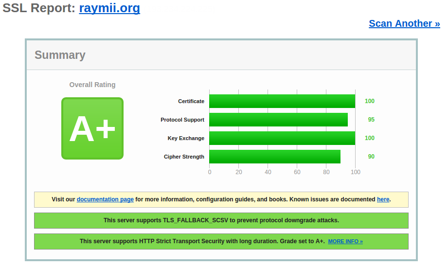

Перевод статьи: Strong SSL Security on nginx
Автор: Реми ван Элст (Remy van Elst)
В этом руководстве показано, как настроить высокую безопасность SSL на веб-сервере nginx. Для этого мы обновим OpenSSL до самой свежей версии, чтобы избежать атак Heartbleed, отключим сжатие SSL и шифры EXPORT, чтобы избежать атак FREAK, CRIME и Logjam, отключим SSL версии 3 и ниже, потому что эти протоколы уязвимы и зададим строгий набор шифров, который по возможности включает Forward Secrecy. Мы также включим HSTS и HPKP. Таким образом мы получим стойкую конфигурацию SSL с богатыми возможностями защиты и получим оценку A+ в тесте Qually Labs SSL.
Я написал веб-приложение с открытым исходным текстом для проверки SSL-серверов. Можно воспользоваться им для проверки конфигурации в дополнение к другим проверкам SSL. Проверка быстрая и отображает всю информацию, которая позволит принять собственное обоснованное решение (без оценок), а результаты сохраняются, так что можно сравнивать различные настройки. Сайт можно проверить по адресу https://ssldecoder.org.
Я также написал удобное веб-приложение, которое уведомляет о скором завершении срока действия сертификата. Исходные тексты открыты, поэтому можно разместить его локально. Уже установленное веб-приложение доступно по адресу https://certificatemonitor.org.
И наконец, я создал веб-сайт с примерами настройки стойких шифров для nginx, Apache, Lighttpd и для другого программного обеспечения: https://cipherli.st. Сайт может пригодиться, если нет времени читать это руководство целиком. Это руководство и веб-сайт https://cipherli.st обновляются по мере обнаружения новых уязвимостей.
Это руководство удовлетворяет строгими требованиями теста SSL Labs, выпущенного 21 января 2014 (Я уже прошёл этот тест, поэтому если вы последуете рекомендациям, то получите оценку A+).
Вы сможете найти дополнительную информацию по затронутым темам по следующим ссылкам:
Мы будем редактировать настройки nginx в файле /etc/nginx/sited-enabled/yoursite.com (в Ubuntu/Debian) или в файле /etc/nginx/conf.d/nginx.conf (в RHEL/CentOS).
Во всём руководстве нужно редактировать содержимое блока, настраивающего сервер на порту 443. В конце руководства можно найти полный пример конфигурации.
Убедитесь, что вы сняли резервные копии со всех файлов, которые собираетесь редактировать!
Вкратце: при взломе алгоритмов блочного шифрования части зашифрованного трафика могут быть тайно расшифрованы. Больше информации можно узнать по ссылке.
В новых версиях браузеров включено смягчение атаки BEAST со стороны клиента. Рекомендуется выключить все шифры TLS 1.0 и предлагать только RC4. Однако, [список атак против RC4 растёт],(http://www.isg.rhul.ac.uk/tls/) многие из них становятся осуществимыми на практике. Более того, есть причины считать, что АНБ взломало RC4, назвав это "большим прорывом".
Отключение RC4 влечёт за собой несколько последствий. Во-первых, пользователи говнобраузеров Internet Explorer в Windows XP вместо него будут использовать 3DES. Triple-DES более безопасен по сравнению с RC4, но обходится значительно дороже. Веб-сервер заплатит цену за этих пользователей. Во-вторых, RC4 смягчает BEAST. Но отключение RC4 делает пользователей TLS 1.0 подверженными этой атаке, заставляя их использовать AES-CBC (обычно от этого защищает приоритет со стороны сервера, настаивающий на использовании RC4). Но я уверен, что сам RC4 несёт в себе больше рисков, чем риск от атак BEAST. Действительно, смягчения со стороны клиента (которые имеются в Chrome и Firefox), избавляют от BEAST. Но риск от использования RC4 со временем только возрастает: криптоаналитики выявляют всё больше проблем.
FREAK - это уязвимость типа "человек в середине", обнаруженная группой криптографов из INRIA, Microsoft Research и IMDEA. FREAK означает "Factoring RSA-EXPORT Keys" - факторизация ключей RSA-EXPORT.
Уязвимость ведёт историю с 1990-х годов, когда правительство США запретило продажу программных криптографических средств за границу, если в них используются наборы шифров с ключами длиннее 512-бит.
Оказалось, что некоторые современные клиенты TLS, включая SecureTransport от Apple и OpenSSL, содержат ошибку. Эта ошибка приводит к тому, что применяются ключи RSA экспортного класса, даже если клиент не запрашивает экспортный класс RSA. Воздействие этой ошибки может быть очень неприятным: это позволяет "человеку в середине" реализовать атаку, в результате которой атакующий сможет понизить безопасность соединения, если клиент имеет уязвимость, а сервер поддерживает экспортный RSA.
Для атаки необходимо выполнение двух условий, поскольку сервер тоже должен принимать "RSA экспортного класса".
Человек в середине атакует следующим образом:
Предложенный здесь набор шифров не включает класс шифров EXPORT. Убедитесь, что OpenSSL обновлён до последней доступной версии и заставьте клиентов обновить их программное обеспечение.
Исследователи из нескольких университетов и институтов провели исследования, в результате которых в протоколе TLS были найдены проблемы. В отчёте этих исследователей сообщается о двух способах атаки.
Обмен ключами Диффи-Хеллмана позволяет в зависимости от TLS согласиться на общий ключ и согласовать безопасный сеанс через незащищённое подключение.
Первая угроза заключается в том, что человек в середине может ослабить уязвимое подключение TLS до 512-битной криптографии экспортного класса, что позволит атакующему читать и изменять данные. Вторая угроза основывается на том, что многие серверы используют одинаковые простые числа для обмена ключами Диффи-Хеллмана, вместо того, чтобы каждый раз создавать свои собственные новые уникальные параметры.
Команда оценила, что академические команды способны взломать 768-битные простые числа, а на государственном уровне возможно взломать 1024-битные простые числа. Взлом одного 1024-битного простого числа позволит прослушивать до 18 процентов из миллиона самых популярных доменов HTTPS. Взлом второго простого числа позволит открыть до 66 процентов VPN-подключений и до 26 процентов SSH-серверов.
Далее в этом руководстве мы создадим собственные уникальные параметры Диффи-Хеллмана и воспользуемся набором шифров, который исключает шифры класса EXPORT. Убедитесь, что OpenSSL обновлён до самой свежей версии и заставьте клиентов обновить их программное обеспечение. Обновлённые браузеры для устранения проблемы отклоняют параметры Диффи-Хеллмана короче 768/1024 бит.
У Cloudflare есть подробное руководство по Logjam.
Heartbleed - это ошибка безопасности, обнаруженная в апреле 2014 года в криптографической библиотеке OpenSSL, которая широко используется для реализации протокола TLS. Уязвимостью Heartbleed можно воспользоваться вне зависимости от того, используется ли уязвимая версия OpenSSL для TLS на сервере или на клиенте. Ошибка заключается в недостаточной проверке входных данных (из-за отсутствия проверки границ) в реализации расширения сердцебиения DTLS (RFC6520), из-за чего ошибка получила название heartbleed ("кровоточащее сердце", что созвучно названию расширения heartbeet - "сердцебиение"). Уязвимость классифицируется как чтение за пределами буфера - случай, когда можно прочитать больше информации, чем должно быть разрешено.
Какие версии OpenSSL затрагивает Heartbleed?
Состояние различных версий:
Ошибка была добавлена в OpenSSL в декабре 2011 и встречалась в дикой природе начиная с релиза OpenSSL 1.0.1 от 14 марта 2012 года. Ошибка была исправлена в выпуске OpenSSL 1.0.1g от 7 апреля 2014 года.
Защититься от уязвимости можно обновив OpenSSL.
Атака CRIME для своего тёмного дела использует сжатие SSL. Сжатие SSL по умолчанию выключено в nginx 1.1.6+/1.0.9+ (если используется OpenSSL 1.0.0+) и в nginx 1.3.2+/1.2.2+ (если используется более старая версия OpenSSL).
Если используется одна из более ранних версий nginx или OpenSSL и в дистрибутив не бэкпортировали эту опцию, то нужно пересобрать OpenSSL без поддержки ZLIB. Это приведёт к отключению сжатия по методу DEFLATE в OpenSSL. Даже после этого можно по-прежнему использовать обычное сжатие HTML DEFLATE.
SSL версии 2 небезопасен, поэтому нужно отключить его. Мы также отключим SSL версии 3, поскольку TLS 1.0 содержит возможность переключиться атакующему на использование SSL версии 3, а затем отключить forward secrecy.
Итак, отредактируем файл конфигурации:
ssl_protocols TLSv1 TLSv1.1 TLSv1.2;
SSL версии 3 позволяет воспользоваться ошибкой POODLE. Это одна из важных причин для его отключения.
Google предложил расширение для SSL/TLS, которое называется TLSFALLBACKSCSV и позволяет предотвратить переключение на более слабые возможности SSL. Оно автоматически включается по умолчанию при обновлении OpenSSL до одной из указанных версий:
Дополнительную информацию можно найти в документации по nginx.
Forward Secrecy - прямая секретность - гарантирует целостность сеансового ключа в ситуации, когда скомпрометирован долгосрочный ключ. Perfect Forward Secrecy - совершенно прямая секретность - достигается тем, что для каждого сеанса выводится новый ключ.
Это означает, что при компрометации приватного ключа нельзя воспользоваться им для расшифровки записанного трафика SSL.
Наборы шифров, предоставляющие Perfect Forward Secrecy - это те, которые используют эфемерный обмен ключами Диффи-Хеллмана. Их недостаток - это накладные расходы, которые можно снизить использованием вариантов на эллиптических кривых.
Я рекомендую следующие два набора шифров, а после меня их стали рекомендовать и Mozilla Foundation.
Рекомендуемый набор шифров:
ssl_ciphers 'EECDH+AESGCM:EDH+AESGCM:AES256+EECDH:AES256+EDH';
Рекомендуемый набор шифров для обратной совместимости (IE6/WinXP):
ssl_ciphers "EECDH+AESGCM:EDH+AESGCM:ECDHE-RSA-AES128-GCM-SHA256:AES256+EECDH:DHE-RSA-AES128-GCM-SHA256:AES256+EDH:ECDHE-RSA-AES256-GCM-SHA384:DHE-RSA-AES256-GCM-SHA384:ECDHE-RSA-AES256-SHA384:ECDHE-RSA-AES128-SHA256:ECDHE-RSA-AES256-SHA:ECDHE-RSA-AES128-SHA:DHE-RSA-AES256-SHA256:DHE-RSA-AES128-SHA256:DHE-RSA-AES256-SHA:DHE-RSA-AES128-SHA:ECDHE-RSA-DES-CBC3-SHA:EDH-RSA-DES-CBC3-SHA:AES256-GCM-SHA384:AES128-GCM-SHA256:AES256-SHA256:AES128-SHA256:AES256-SHA:AES128-SHA:DES-CBC3-SHA:HIGH:!aNULL:!eNULL:!EXPORT:!DES:!MD5:!PSK:!RC4";
В старых версиях OpenSSL недоступные шифры будут пропущены автоматически. Всегда используйте полный набор шифров, указанных выше и позвольте OpenSSL выбирать те из них, которые поддерживаются.
Порядок набора шифров очень важен, потому что влияет на приоритеты при выборе алгоритмов. Рекомендации, указанные выше, отдают приоритет алгоритмам, предоставляющим Perfect Forward Secrecy.
Более старые версии OpenSSL могут не возвращать полный список алгоритмов. Алгоритмы AES-GCM и некоторые виды ECDHE появились сравнительно недавно и отсутствуют в большинстве версий OpenSSL, поставляемых в составе Ubuntu или RHEL.
Убедитесь, что в конфигурации есть эти строки:
ssl_prefer_server_ciphers on; ssl_session_cache shared:SSL:10m;
При согласовании шифров в процессе рукопожатия SSLv3 или TLSv1 обычно используются предпочтения клиента. При включении этой директивы вместо них будут использоваться предпочтения сервера.
Дополнительная информация на sslpreferserver_ciphers.
Дополнительная информация на ssl_ciphers.
Концепция прямой безопасности проста: клиент и сервер согласуют ключ, который никогда не передаётся по сети и уничтожается при завершении сеанса. Приватный RSA-ключ сервера используется для подписи обмена ключами Диффи-Хеллмана между клиентом и сервером. Премастер-ключ получается из рукопожатия Диффи-Хеллмана, а затем используется для шифрования. Поскольку премастер-ключ относится к подключению между клиентом и сервером и используется только ограниченное время, он называется эфемерным.
При использовании Forward Secrecy - прямой секретности, если атакующий получит приватный ключ сервера, он не сможет расшифровать последующий обмен данными. Приватный ключ используется только для подписи рукопожатия Диффи-Хеллмана, которое не раскрывает премастер-ключ. Диффи-Хеллман гарантирует, что премастер-ключ никогда не покинет клиента и сервер и поэтому не сможет быть перехвачен "человеком в середине".
Все версии nginx, по состоянию на момент выхода версии 1.4.4, полагаются на входные параметры для протокола Диффи-Хеллмана из OpenSSL. Поэтому эфемерный протокол Диффи-Хеллмана будет использовать настройки по умолчанию из OpenSSL, которые включают использование 1024-битного ключа для обмена ключами. Поскольку мы используем 2048-битный сертификат, клиенты, использующие эфемерный протокол Диффи-Хеллмана, будут использовать более слабый обмен ключами, чем клиенты, использующие не эфемерный протокол Диффи-Хеллмана.
Нам нужно сгенерировать более стойкие параметры для эфемерного протокола Диффи-Хеллмана:
cd /etc/ssl/certs openssl dhparam -out dhparam.pem 4096
А затем сообщим nginx использовать их для обмена ключами по эфемерному протоколу Диффи-Хеллмана:
ssl_dhparam /etc/ssl/certs/dhparam.pem;
При подключении к серверу клиенты должны проверить действительность сертификата сервера по списку отозванных сертификатов (CRL) или через протокол интерактивного статуса сертификата (OCSP). Проблема списков отозванных сертификатов заключается в том, что такие списки вырастают до огромных размеров и их скачивание может затянуться на вечность.
OCSP намного легче, поскольку за один раз запрашивается одна запись. Но недостаток состоит в том, что при подключении к серверу нужно выполнить OCSP-запрос к стороннему ответчику, что увеличивает задержку и может оказаться причиной сбоев. Фактически, ответчики OCSP управляются удостоверяющим центром, недоступность которого для браузера приведёт к ошибке, если ответ не будет получен своевременно. Это уменьшает безопасность, позволяя атакующему наводнить запросами ответчик OCSP, чтобы отключить проверку.
Решение заключается в том, чтобы разрешить серверу отправлять в процессе рукопожатия TLS запись OCSP из кэша, так чтобы не затрагивать ответчика OCSP. Этот механизм избавляет клиента от необходимости связываться с ответчиком OCSP и называется вшиванием OCSP.
Сервер посылает ответ OCSP из кэша только если клиент его запрашивает, сообщая в CLIENT HELLO о поддержке расширения TLS status_request.
Большинство серверов сохраняют в кэш OCSP-ответы на 48 часов. Через регулярные интервалы времени сервер будет подключаться к ответчику OCSP удостоверяющего центра, чтобы получить свежую запись OCSP. Расположение ответчика OCSP берётся из подписанного сертификата, из поля Authority Information Access - доступ к информации о подлинности.
Обратитесь к моему руководству о включении вшивания OCSP в nginx.
По возможности лучше включить строгую безопасность транспорта HTTP (HSTS), которая предписывает браузеру связываться с сайтом только через HTTPS.
Обратитесь к моей статье по HSTS, чтобы узнать, как её настроить.
Также стоит включить расширение для фиксации публичного ключа HTTP.
Фиксация публичного ключа означает, что цепочка сертификатов должна включать публичный ключ из белого списка. Это гарантирует, что сертификаты для *.example.com могут быть подписаны только удостоверяющими центрами из белого списка, но не какими-либо другими удостоверяющими центрами из хранилища в браузере.
Я написал статью с объяснением теории и примерами конфигурации для Apache, Lighttpd и nginx.
Чтобы указанные выше строчки файла конфигурации вступили в силу, нужно перезапустить nginx:
# Сначала проверим файл конфигурации: /etc/init.d/nginx configtest # Теперь перезапустим: /etc/init.d/nginx restart
Теперь воспользуемся проверкой SSL Labs, чтобы увидеть рейтинг A+. И, конечно, у нас получилась безопасная и строгая конфигурация SSL с запасом на будущее!